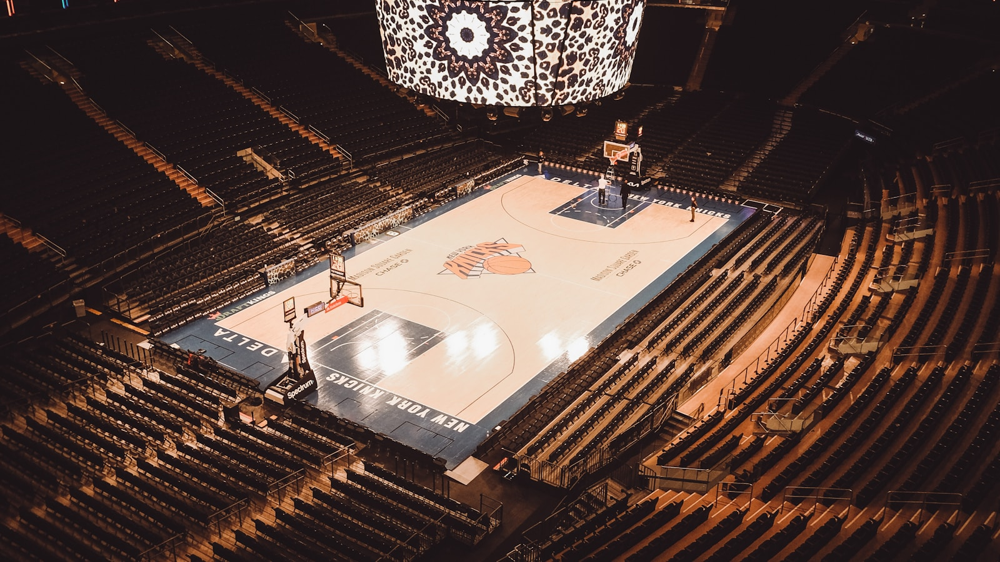

Projects

Data Engineering · Project 01
NBA Basketball Operations Warehouse
Independent portfolio project. Not affiliated with or endorsed by the NBA.
About
I build reliable data pipelines and analytical datasets. Open the project to review the executed notebook, code, and results.